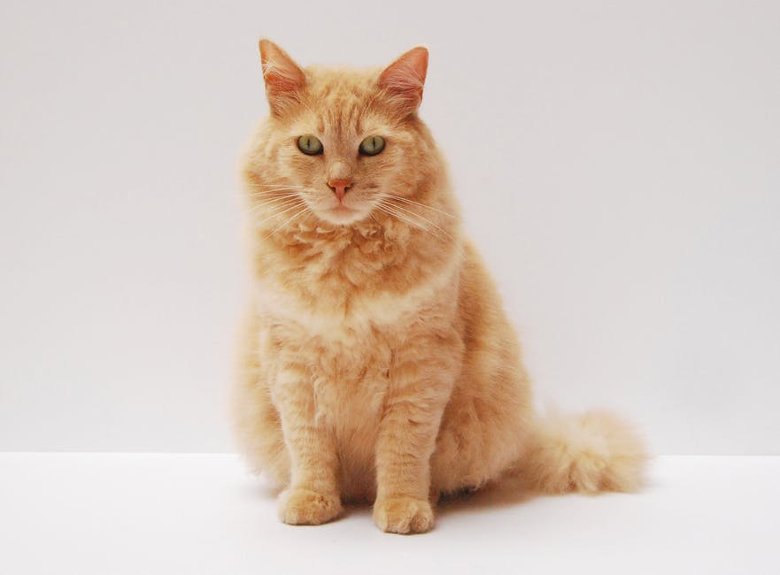
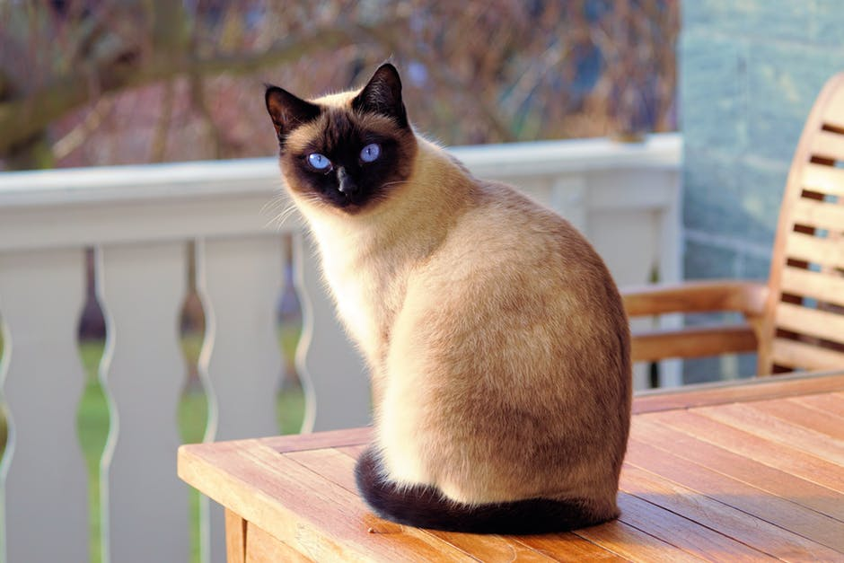
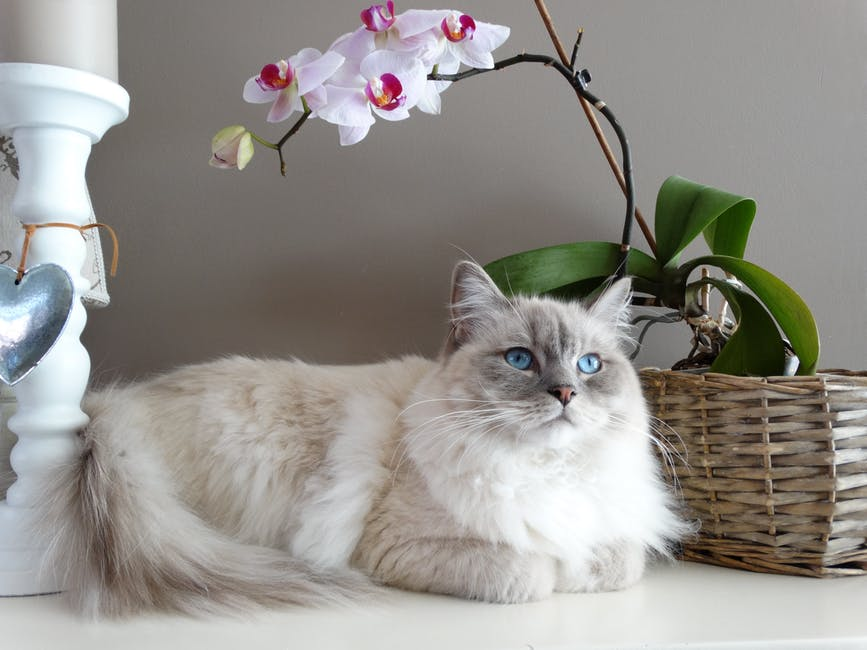
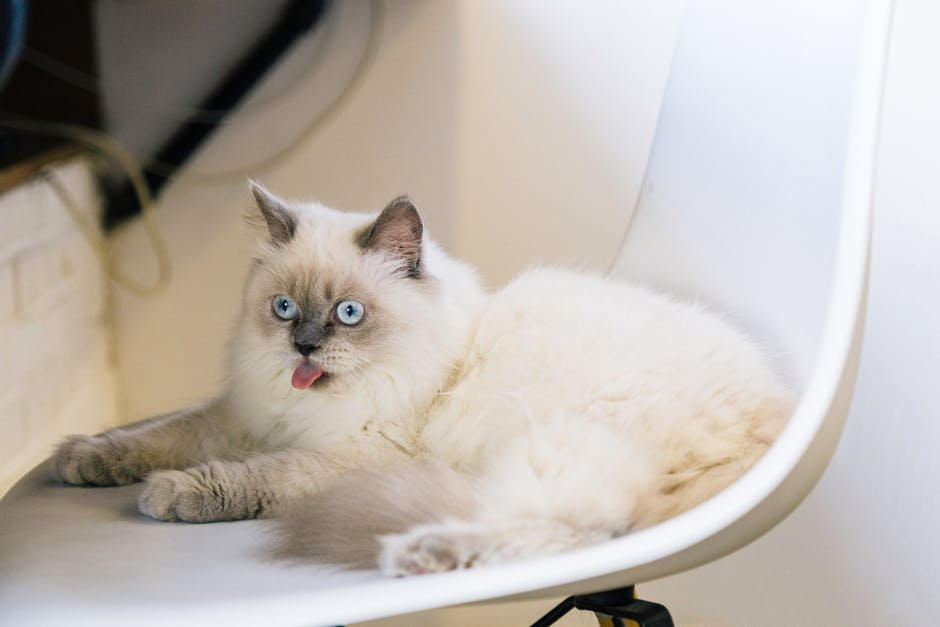

|
Douglas

My name is Douglas and I am a 6 month old, male, Domestic Short Hair. I arrived at the AAC on 1/26 from Star Valley. I am your typical juvenile cat who is playful and loving.
Young, Male, Medium |
Buford

My name is Buford and I am a 4 year old, male, Domestic Short Hair, tabby. I was found in Star Valley, brought to the shelter and never claimed so I joined the AAC just recently. I am a hunk of a cat and love to get my butt scratched
Adult, Male, Large |
|
Dayton

My name is Dayton and I am a 5 year old, male, Domestic Short Hair, Black & White Tuxedo. I arrived from Star Valley on 2/2 with an infected mouth and some ear mites but am feeling much better after I got a fresh dental and the antiobiotics that I needed!
Adult, Male, Medium |
Cora

My name is Cora and I am an 8 month old, female, Domestic Short Hair, tabby. I came from Star Valley on 2/2/18 and I am a sweet little thing that is social, playful and easy going.
Young, Female, Medium |